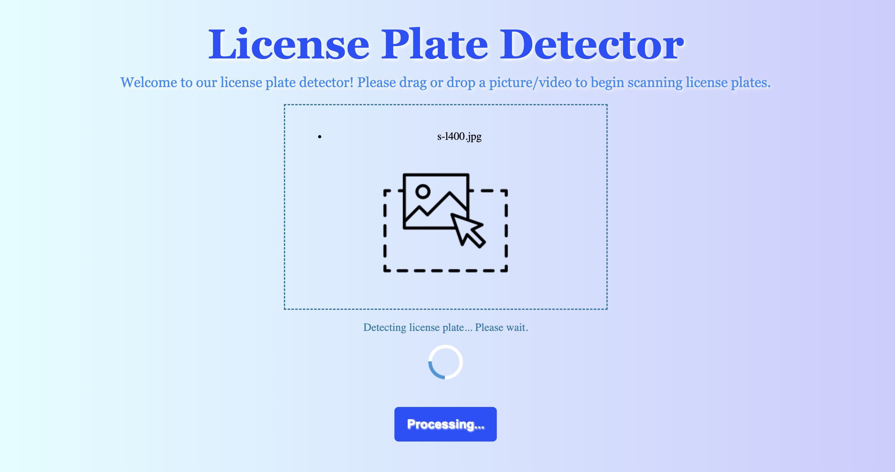
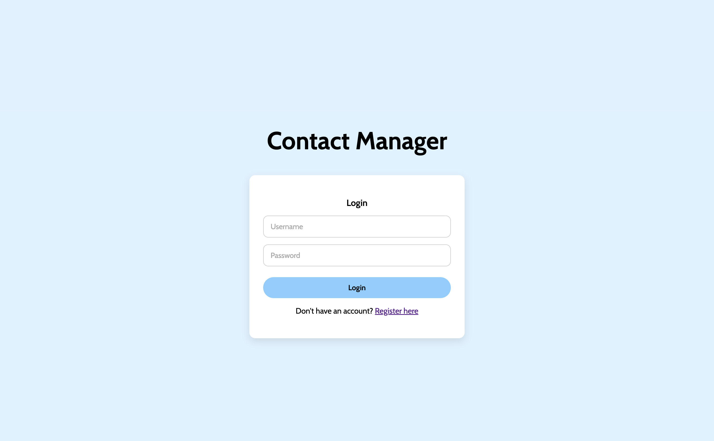

Here's the full selection of some projects I've worked on! Provided will be either the website or GitHub link to each.

Ducky Dollars
Budget Tracking application that uses the MERN stack. Users can set their monthly budgets by creating categories and adding transactions to those categories. The app states when the user is within or over budget and utilizes graphs to help see changes in their budget.

CozyShelf
Book Tracker application developed on Android Studio that supports full CRUD functionality. Diagrams designed through Figma prior to development.

Sorority Website
Completely redesigned Alpha Sigma Kappa's website from scratch using Wix. Designed homepage on Figma prior to building

License Plate Detector
First involvement in a web development project as a front-end developer building a licese plate detector where a user can view and manage their license plate records in real time.

Contact Manager
Front-end Developer for group LAMP Stack project where users can manage their contacts. This includes, adding, editing, and deleting contacts from a database.


.jpg)